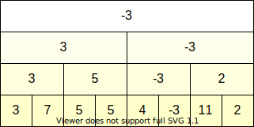
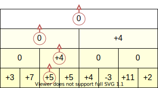

セグメント木¶
蟻本p.153
https://ikatakos.com/pot/programming_algorithm/data_structure/segment_tree
https://algo-logic.info/segment-tree/
https://kujira16.hateblo.jp/entry/2016/12/15/000000
セグメント木¶
原理¶
以下、簡単のため要素数 \(n\) を2のべき乗とする。
ビット長が木の深さを表す。
兄弟ノードは下位1ビットだけが異なる。
Range Minimum Query (RMQ)¶
要素列をセグメント木に格納すると、区間に対する問い合わせを高速化できる。
初期化: \(\mathcal{O}(n)\)
要素1つの更新: \(\mathcal{O}(\log{n})\)
区間 \([l, r)\) の最小値を求める問い合わせ: \(\mathcal{O}(\log{n})\)

1点更新¶
要素を更新するにはセグメント木を下層から上層へと辿りつつ、通過した節点に書かれた区間最小値を更新していく。
例えば配列の3番目の要素を \(5 \rightarrow 2\) に更新する場合、次のような更新経路を辿る。
問い合わせ (トップダウン)¶
問い合わせ (ボトムアップ)¶
ノードの添字が 奇数 (図中の緑ノード) ならば、ノードに書かれた数値は区間最小値である。値を取得して 右上 のノードへ移動する。
ノードの添字が偶数ならば、ノードに書かれた数値は区間最小値でない可能性がある。値を取得せずに直上のノードへ移動する。
同様に、区間の右端 \(r\) も更新する。
ノードの添字が 偶数 (図中の青ノード) ならば、ノードに書かれた数値は区間最小値である。値を取得して 左上 のノードへ移動する。
ノードの添字が奇数ならば、ノードに書かれた数値は区間最小値でない可能性がある。値を取得せずに直上のノードへ移動する。
ボトムアップ型では問い合わせ区間外のノードを見ることがないため、平均計算量 \(\mathcal{O}(\log{n})\) が実現できる。
実装¶
ボトムアップ型、トップダウン型それぞれの実装を示す。実際の問い合わせはボトムアップ型で処理する。
[ ]:
class RMQ():
def __init__(self, size, op=min, init_value=10**8):
"""初期化"""
self.size = size
self.op = op
self.init_value = init_value
n = 2 ** ((size-1).bit_length())
treesize = n * 2
st = [init_value] * treesize
self.st = st
self.offset = len(st) // 2
@classmethod
def from_array(cls, a, op=min, init_value=10**8):
st = cls(len(a), op=op, init_value=init_value)
for i, x in enumerate(a):
st.update(i, x)
return st
def update(self, key, value):
"""値の更新"""
k = self.offset + key
self.st[k] = value
k >>= 1
while k > 0:
self.st[k] = self.op(self.st[k * 2], self.st[k * 2 + 1])
k >>= 1
def _query_bottomup(self, a, b):
"""区間[a, b) に対する累積操作
"""
a += self.offset
b += self.offset - 1
s = self.init_value
while a < b:
if a & 1:
s = self.op(s, self.st[a])
a += 1
a >>= 1
if not b & 1:
s = self.op(s, self.st[b])
b -= 1
b >>= 1
if a == b:
s = self.op(s, self.st[a])
return s
def _query_topdown(self, a, b, k=1, l=0, r=-1):
"""区間[a, b) に対する累積操作
k: 着目しているノード (1-indexed)
l: 探索区間 st[l, r) の左端 (0-indexed)
r: 探索区間 st[l, r) の右端 (0-indexed)
"""
if r == -1:
r = self.offset
if r <= a or b <= l:
return self.init_value
if a <= l and r <= b:
return self.st[k]
mid = (l + r) // 2
lv = self._query_topdown(a, b, k * 2, l, mid)
rv = self._query_topdown(a, b, k * 2 + 1, mid, r)
return self.op(lv, rv)
def query(self, a, b):
"""区間[a, b) に対する累積操作"""
if a > b:
raise ValueError("a must be less than equal b.")
return self._query_bottomup(a, b)
[2]:
A = [3, 7, 5, 5, 4, -3, 11, 2]
rmq = RMQ.from_array(A)
rmq.update(2, 2)
print(rmq.query(2, 7))
-3
結合法則が成り立つ \((a \cdot b) \cdot c = a \cdot (b \cdot c)\)
単位元 \(e\) をもつ \(a \cdot e = e \cdot a = a\)
操作 op には二項演算子を、初期値 init_value には単位元を指定する。
クエリ |
操作 |
初期値 |
|---|---|---|
和 |
|
0 |
積 |
|
1 |
最小値 |
|
+INF |
最大値 |
|
-INF |
AND |
|
1 |
OR |
|
0 |
XOR |
|
0 |
GCD |
|
0 |
LCM |
― |
1 |
Range Add Query (RAQ)¶
区間に対する高速な更新操作を実現する。
初期化: \(\mathcal{O}(n)\)
区間更新、区間に対する加算: \(\mathcal{O}(\log{n})\)
1点問い合わせ、値の取得: \(\mathcal{O}(\log{n})\)
1点問い合わせ¶
例えば配列の3番目の要素を取得する場合、次のような経路を辿る。取得される値は \(+5+4+0+0=9\) となる。

区間更新¶
実際、RAQの区間更新の実装は、RMQの区間問い合わせの「ノードの値の取得」を「ノードの更新」に置き換えただけである。
実装¶
区間更新の実装については、トップダウン型とボトムアップ型の両方を示す。
[3]:
class RAQ():
def __init__(self, size):
"""初期化"""
self.size = size
n = 2 ** ((size-1).bit_length())
treesize = n * 2
st = [0] * treesize
self.st = st
self.offset = len(st) // 2
@classmethod
def from_array(cls, a):
st = cls(len(a))
for i, x in enumerate(a):
st.add(i, i+1, x)
return st
def _add_topdown(self, a, b, value, k=1, l=0, r=-1):
"""区間[a, b) に対する加算
k: 着目しているノード (1-indexed)
l: 探索区間 st[l, r) の左端 (0-indexed)
r: 探索区間 st[l, r) の右端 (0-indexed)
"""
if r == -1:
r = self.offset
if r <= a or b <= l:
return
if l == r - 1:
self.st[k] += value
return
if a <= l and r <= b:
self.st[k] += value
return
mid = (l + r) // 2
self._add(a, b, value, k * 2, l, mid)
self._add(a, b, value, k * 2 + 1, mid, r)
def _add_bottomup(self, a, b, value):
"""区間[a, b) に対する加算
"""
a += self.offset
b += self.offset - 1
while a < b:
if a & 1:
self.st[a] += value
a += 1
a >>= 1
if not b & 1:
self.st[b] += value
b -= 1
b >>= 1
if a == b:
self.st[a] += value
def add(self, a, b, value):
"""区間[a, b) に対する加算"""
if a > b:
raise ValueError("a must be less than equal b.")
return self._add_bottomup(a, b, value)
def get(self, key):
"""値の取得"""
offset = len(self.st) // 2
k = offset + key
v = self.st[k]
k >>= 1
while k > 0:
v += self.st[k]
k >>= 1
return v
[4]:
A = [3, 7, 5, 5, 4, -3, 11, 2]
raq = RAQ.from_array(A)
raq.add(2, 4, 4)
raq.add(4, 8, 4)
print(raq.get(2))
raq.add(2, 6, 2)
print(raq.get(2))
9
11